ถ้ำรากแม่พิษ B1
ดูบนแผนที่และวิธีไป วางแผนฟาร์ม
ดันเจี้ยนในแดนใต้สีแดง · Lv 62–68
ชั้นล่าง / ดันเจี้ยน
มอนในแมพ (5)
| มอน | Lv | ธาตุ | โซน |
|---|---|---|---|
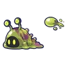 ทากพิษแตกตัว | 64–68 | พิษ | |
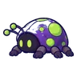 เต่าทองพิษ | 62–65 | พิษ | |
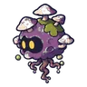 สปอร์พิษลอย | 62–65 | พิษ | |
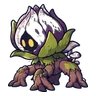 ตัวอ่อนต้นแม่พิษ | 64–68 | พิษ | |
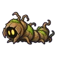 หนอนรากมุดดิน | 64–68 | ดิน |
อุปกรณ์ที่ดรอปในแมพนี้
| ของ | โอกาสสูงสุด |
|---|---|
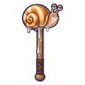 ค้อนยักษ์เปลือกหอยทาก | 0.25% |
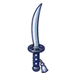 ดาบคู่คมหมอก | 0.25% |
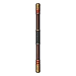 ไม้พลองไม้เหล็ก | 0.25% |
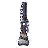 ลูกซองขนหมาป่า | 0.25% |
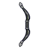 ธนูไม้ดำฝังเงิน | 0.25% |
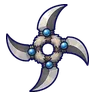 ดาวยักษ์กรงเล็บหมาป่า | 0.25% |
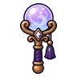 ออร์บลูกแก้วทำนาย | 0.25% |
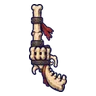 ปืนพกคู่กระดูกทหาร | 0.25% |
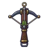 หน้าไม้นักล่าเงียบ | 0.25% |
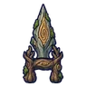 คาทาร์รากต้นไม้ยักษ์ | 0.25% |
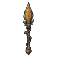 หอกแก่นไม้ยักษ์ | 0.25% |
| เกราะผู้พิทักษ์กองไฟ | 0.15% |
| ชุดพรานในตำนาน | 0.15% |
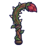 เคียวคู่เถาดอกไม้กินคน | 0.12% |
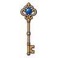 คทากุญแจโบราณ | 0.12% |